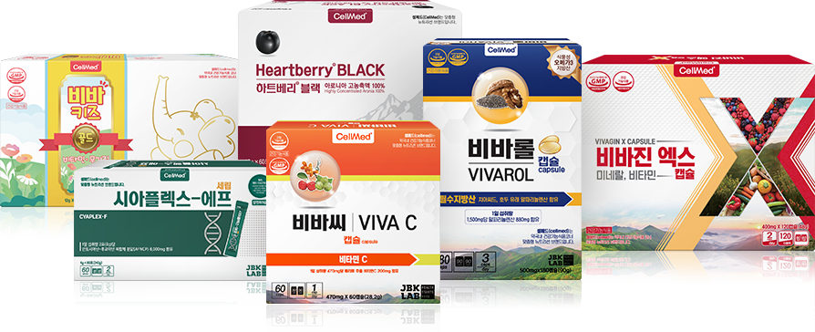

셀메드는 만성질환의 효율적인 관리를 위해 약사가 직접 처방하는 활성형 식물영양소 브랜드입니다.

셀메드의 전제품은
활성과 안정성을 증가시킨
활성형 식물영양소를 주원료로 만들어집니다.
기존 식품 시장에 안정성이 검증된 식물 영양소를 더하여 만든 새로운 개념의 제품입니다.
셀메드는 자체 연구소에서 축적한
활성형 기술을 바탕으로 획기적인 제품 개발에 노력하고 있습니다.
뉴트라슈티컬인 안토시아닌 – 후코이단 나노복합체와 활성형 노유파 오메가(3, 6, 9)는 셀메드의 핵심제품으로 HACCP과 GMP시설에서 제조하여 탁월한 안정성을 자랑합니다.